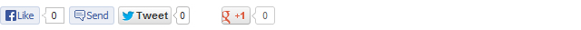

Created: 26/10/2013
By: Tomas Toman
Web: www.tomastoman.cz
First of all, I would like to thank you for choosing TimeTurner! I firmly believe that you will be satisfied with the product. In case of any problems or doubts you can use the TimeTurner Official Support (in English, German or Czech).
Thanks so much!
TimeTurner is an easy customizable WordPress blog and portfolio theme. It is a fully responsive theme that allows for easy viewing on any device. If you like retro style, TimeTurner is your kind of environment! Using Theme Options panel, you can customize this theme directly to your needs.
Compatible Browsers: Internet Explorer 8+, Google Chrome, Mozilla Firefox, Opera, Safari
Compatible WordPress Versions: 3.4, 3.4.1, 3.4.2, 3.5, 3.5.1, 3.5.2, 3.6, 3.6.1, 3.7, 3.7.1
For TimeTurner installation, you must follow these basic steps:
Once you have purchased TimeTurner Premium Version, simply delete the "timeturner" folder in "wp-content/themes" directory on your host web server and replace it by folder that you have got by purchasing TimeTurner Premium Version.
The options framework is available through the link "Theme Options" located on the upper horizontal admin bar (or via panel "Appearance => Theme Options").
This tab is used for choosing one of the basic color schemes, background pattern and setting to display or not the main parts of layout (right sidebar, favicon, header logo and post navigation). You can set here the offset of some Header menu item to avoid overlapping with the logo. You can find here the single posts/pages displaying options, too. You can set if you want to display the featured images, dates, categories and authors on individual posts.
This tab is used for setting Header, About, Portfolio and Blog sections on your homepage. You can set here the headlines of these sections and choose a category of posts which you want to display in Portfolio. You can also hide the individual homepage sections.
This tab is used for setting your own color scheme. You can choose here the colors of individual parts of layout, headlines and texts. Using color pickers, you can easily choose exactly that color you want. You can also directly enter the hexadecimal code of your favorite color.
Tip: If you want to use the same color for more items, simply copy and paste its hexadecimal code instead of setting it using color pickers on each item.
Color settings panel
This tab is used for selecting Google fonts for individual headlines and text areas. TimeTurner offers more than 200 fonts for choosing. The default fonts are specified in the main stylesheet file (style.css in the main theme folder).
On this tab, you can choose wheter to display or not the Facebook, Twitter and Google +1 sharing buttons which may appear below your single posts/pages content.
Social networking panel
On this tab, you can fill your own cascading style sheet information (CSS) for modifying the layout. So you do not have to write your custom CSS straight into the file style.css in the main theme folder. The CSS information defined on this tab appear in the "head" section of source code.
Above the Custom CSS field, there are also links for editing widgets, menus and slideshows.
There are several areas for displaying widgets in TimeTurner Theme:
The Widget panel is located in "Appearance => Widgets" section. If you want to place a widget in some of that areas, simply drag its panel and drop it to the area where you want to display the widget.
Main Sidebar widget area displays in the right sidebar, below the Sidebar navigation, on all your sub-pages and posts. Its name in "Appearance => Widgets" panel is "Main Sidebar". You can put here as many widgets as you want.
Index-blog Sidebar widget area displays in the right sidebar in Homepage Blog section. It looks same as the Main Sidebar. Its name in "Appearance => Widgets" panel is "Index-blog Sidebar". You can put here as many widgets as you want.
Footer widget area displays in the footer as the 3 columns of widgets. In "Appearance => Widgets" panel, you can see 3 areas for individual columns: "Footer left widget area", "Footer middle widget area" and "Footer right widget area". This boxes represent those 3 widgets. You can put as many widgets as you want on each column.
The widget area for copyright and other notices displays in the footer, below the main Footer widget area (described above). Its name in "Appearance => Widgets" panel is "Footer notices". Put here one "Text" widget. Into the content field of this widget fill the text (or HTML code) you want to display here. The "Title" field of this Text widget should stay empty.
The widget area for displaying Home page slideshow is reserved for one "Cyclone Slider Widget". Its name in "Appearance => Widgets" panel is "Homepage slideshow". Put here one "Cyclone Slider Widget" and choose the slideshow you want to display on your home page. The "Title" field of this Cyclone Slider Widget should stay empty.
The widget area for individual boxes which display in Homepage About section. Insert here as many Text widgets as you want. To insert a picture or "Read more" button, you can simply use custom theme shortcodes.
TimeTurner Theme offers 2 custom widgets:
This widget is ready to use for displaying icons with links to your profiles on social networks and RSS feed. Put TimeTurner Social Widget into Sidebar or Footer widget areas in "Appearance => Widgets" panel and fill requested URL addresses. These social networks and services are supported:
This widget is ready to use for displaying Twitter Follow button. Put TimeTurner Twitter Widget into Sidebar or Footer widget areas in "Appearance => Widgets" panel and fill the Twitter username you want to display via Twitter Follow button.
In TimeTurner theme, there are 2 areas for displaying menus:
Menu settings panel is located in "Appearance => Menus". At first create a new menu and assign it to one of two pre-defined Menu areas. Then in left panels choose required pages/categories or custom links and add them to your new Menu. Then save all changes.
If you want to create a submenu, just drag required menu item and move it more to the right against its parent item. When you drop your sub-item, it should stay with indentation against the parent item. This way you can create unlimited levels of submenus.
Example of three-levels menu
Beside Default Template, TimeTurner offers 3 other custom Page templates. If you create a new page or edit some existing page, you can choose the Page template in "Page Attributes => Template" right panel.
"Sitemap" Page template is ready for displaying your sitemap page. If you want to use it, the Dagon Design Sitemap Generator plugin must be activated. The sitemap options can be edited on "Settings => DDSitemapGen" panel.
If you want to display only some pages without the main right sidebar, simply use this template for these pages.
This template is ready for displaying all of your Portfolio items (posts from category selected in Theme Options panel) together with another additional content. This Page template is also displayed without the main right sidebar.
Some functions of TimeTurner are conditioned by installing some plugins. The recommended plugins are included in the installation folder of TimeTurner (folder "plugins"). If some of the recommended plugins are inactive, you can see them in "Appearance => Install Plugins" panel.
List of recommended plugins:
The plugins are modified to ensure the best compatibility with TimeTurner. If you will find their newer versions on web, I don't recommend to update them, because all custom modifications will be lost. Plugins updates will come automatic with newer versions of TimeTurner.
Slideshows are based on Cyclone Slider 2 plugin. You can edit them under "Cyclone Slider" tab in the main WordPress navigation. The plugin provides displaying images, Youtube or Vimeo videos and Custom HTML content in Slideshow. By default, there are 3 different slideshow templates customized for TimeTurner: Standard, Default and Dark. The control is very easy and intuitive. On the right panels of Slideshow editing form, you can set dimensions, transitions effects and other options. Above these panels are generated Shortcodes for simply adding your slideshows into the posts or pages.
If you want to add some Slideshow into Homepage header using "Cyclone Slider Widget", please read this paragraph. Recommended size of Homepage slideshow is 950 x 420 px.
For adding some slideshow in the content of your static pages or posts, you can use Cyclone Slider 2 shortcodes: [cycloneslider id="slideshow-id"].
If you want to use the "sitemap" Page template, the Dagon Design Sitemap Generator plugin has to be installed and activated. This plugin provides many advanced options for displaying pages and posts in sitemap. You can set them on "Settings => DDSitemapGen" panel.
TimeTurner offers several custom shortcodes for easy displaying of some HTML objects on pages/posts or widgets:
[image src="Image URL"] (only in Premium Version available)
Shortcode for displaying images. It is especially useful for inserting images into Text widgets.
[table cols="headline1,headline2" data="row 1 value 1,row 1 value 2,row 2 value 1,row 2 value 2"] (only in Premium Version available)
Shortcode for displaying tables. The parameter "cols" is used for inserting headlines of individual columns. The parameter "data" is used for inserting own data in rows of your table.
[more-button link="URL address"]READ MORE[/more-button]
Shortcode for displaying center-aligned buttons. It is especially useful for inserting "Read more" buttons in homepage About section widgets.
[button link="URL address"]TEXT OF YOUR BUTTON[/button]
Shortcode for displaying left-aligned buttons.
[cycloneslider id="slideshow-id"]
Shortcode for displaying Cyclone Slider 2 slideshows in post/page content.
TimeTurner theme is ready for translation into any language. The .pot file (timeturner.pot) is located in "timeturner/languages" theme folder. TimeTurner contains integrated Czech (cs_CZ), French (fr_FR), German (de_DE) and Slovak (sk_SK) language localizations. The best way how to make the language localization is creating your own .po and .mo files and adding them in "timeturner/languages" theme folder. If you will create them, please let me know, I will add your language localization into the official theme distribution.
If you don't know how to create the .po and .mo files, never mind! Simply install CodeStyling Localization plugin and create your language localization on "Tools => Localization" panel.
1.) Where could I edit my website title and description?
Go to the "Settings => General" panel and rewrite here the fields "Site Title" and "Tagline".
2.) Where could I allow/disallow comments adding?
Go to the "Settings => Discussion" panel and set the options according to your needs.
3.) What are the "Tags"?
Tags are similar to Categories. They are used for better description of posts. We can say that Tags are the keywords which specify the posts in great detail.
4.) How could I set title, description and keywords meta tags for each page and post?
The easiest way is to install some SEO plugin, for example All In One SEO Pack.
5.) Where could I set the number of posts, which display on index/categories/archives/search pages?
Go to the "Settings => Reading" panel and set the options according to your needs.
6.) I dont want to display the latest posts on my home page. Could I set a static page as my home page?
Yes, go to the "Settings => Reading" panel and choose the option "A static page" instead of "Your latest posts".
7.) How could I set the URL addresses of my pages and posts into user-friendly form, instead of "?p=123" displaying?
Go to the "Settings => Permalinks" panel and choose the option "Post name" in section "Common Settings".
8.) Where could I set my time zone and date/time format?
Go to the "Settings => General" panel and set the options according to your needs.
Once again, thank you so much for choosing this theme. As I said at the beginning, I'd be glad to help you if you have any questions relating to this theme. No guarantees, but I'll do my best to assist. Best regards and have fun with TimeTurner!
Tomas Toman